Cell membranes reconstructed from isotropic FIB-SEM volumes of mouse tissue, from the Janelia CellMap / OpenOrganelle collection. Everything on this page is real segmented data, not an illustration — and every surface can be measured, not just admired. Three things to take away: the size of these datasets, the resolution they hold, and the quantification they make possible.
1 · Scale
A single FIB-SEM dataset here spans tens to hundreds of micrometres of intact tissue — thousands of cells in their native context — yet stays sharp down to the width of a single membrane. That span, six orders of magnitude in one dataset, is what makes this data different from either light microscopy (big but blurry) or classical EM (sharp but tiny).
The full volumes are public and browsable in the browser — open any dataset below in Neuroglancer and fly through the tissue yourself. No install, no login.
2 · Resolution
The voxels are 4–8 nm on a side — the scale of the lipid bilayer. At that resolution the surface of a cell stops being a smooth cartoon: every fold, protrusion and contact is real geometry. These are live 3D models — drag to rotate, scroll to zoom. Zoom all the way in: the detail keeps going.
Color legends for the models on this page — Curvatureconvex concave · Contact gap: distance to the neighboring cell · Deviation: protrusions and indentations vs the smoothed surface
3 · Quantification
Because every voxel is labeled, the geometry is measurable: how wide the space between cells is, how much of a membrane sits in contact with its neighbor, how rough or curved or folded a surface is — per point, per cell, per region, per preservation method. The models below aren't colored for looks; the color is the measurement.
Extracellular gap width — dot = median, bar = 10th–90th percentile. Each row is one imaged tissue volume. Hover any row.
Fraction of the cell boundary within 40 nm of the neighboring cell — how much of each membrane is effectively "in contact".
Effect size (Cliff's δ) for chemical vs rapid-cryo preservation across the metric suite. Red = larger under chemical fixation, blue = larger under cryo. Hover any cell.
How it's made
The same tissues go down two preservation routes and through one identical pipeline — so any difference we measure is the preparation, not the processing.
Turntable loops (good for slides), the rest of the interactive models, and rendered stills.
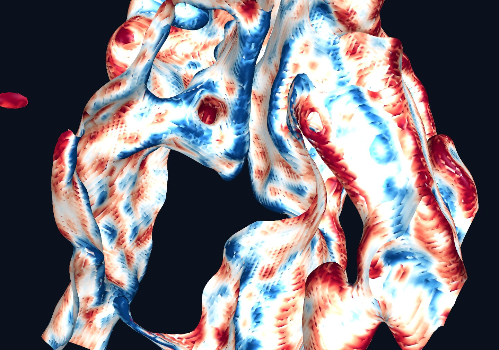
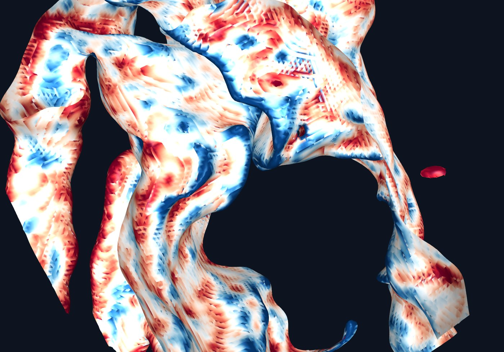
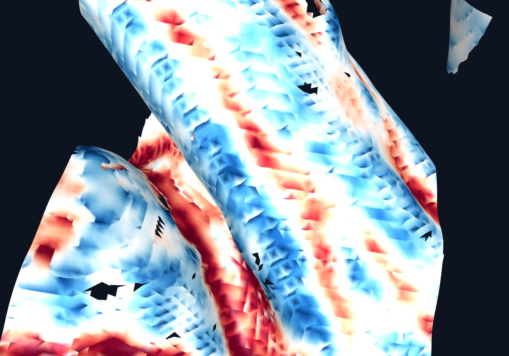
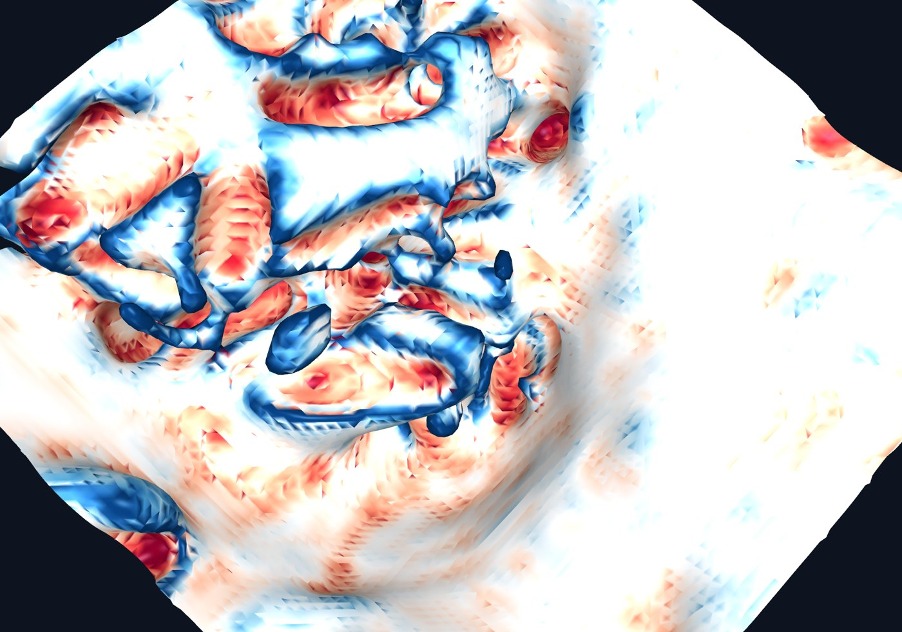
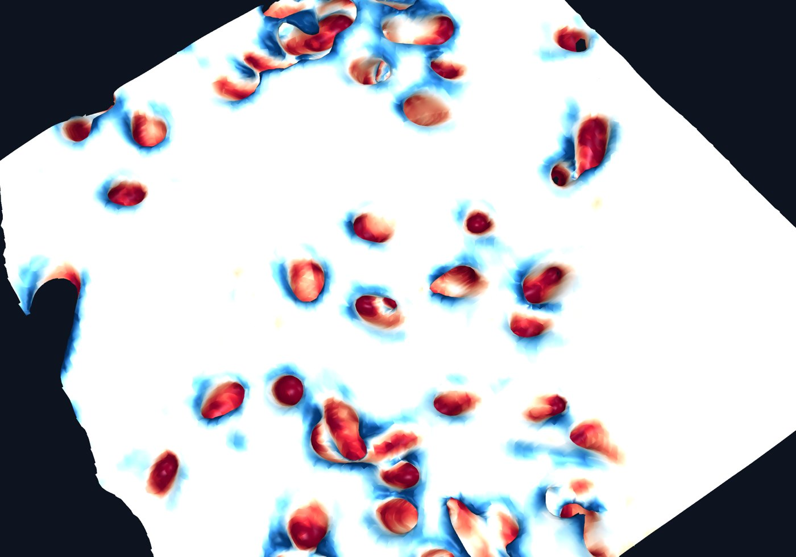
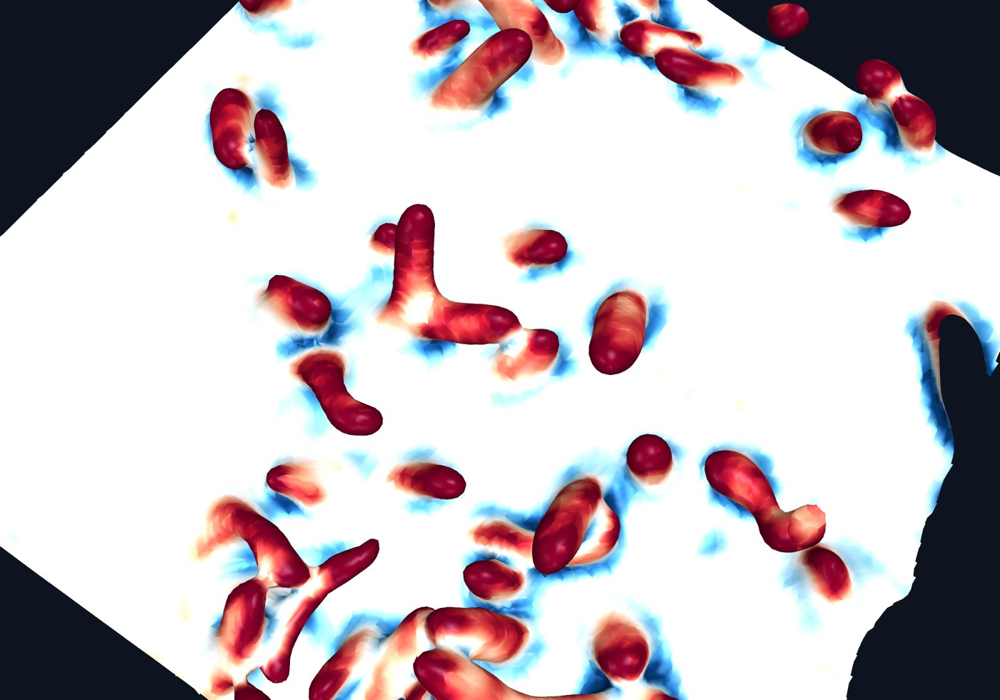
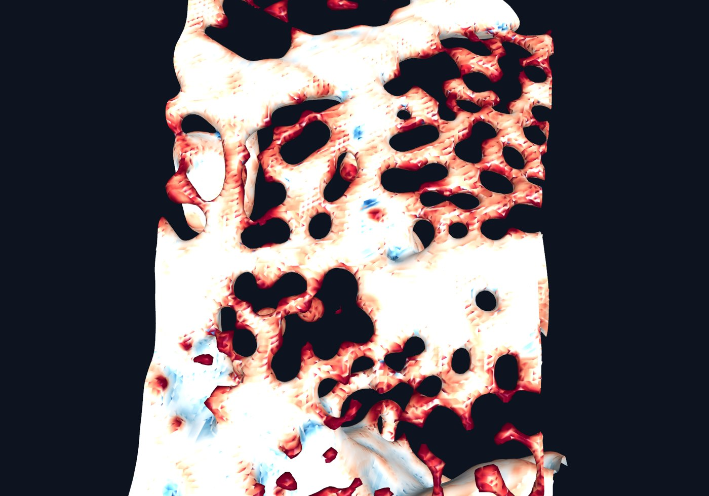
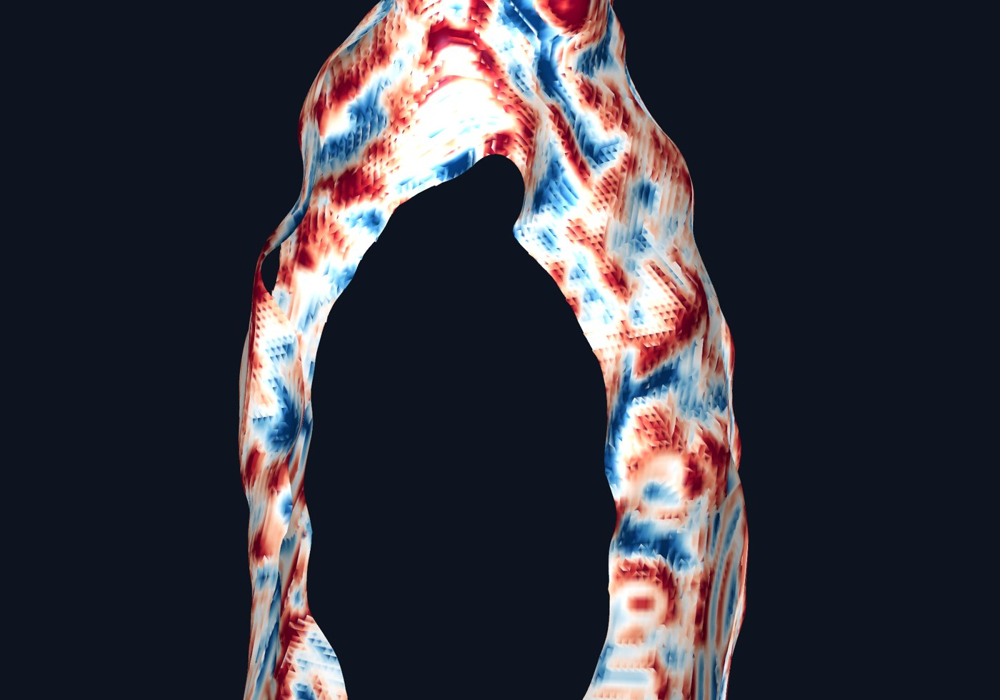
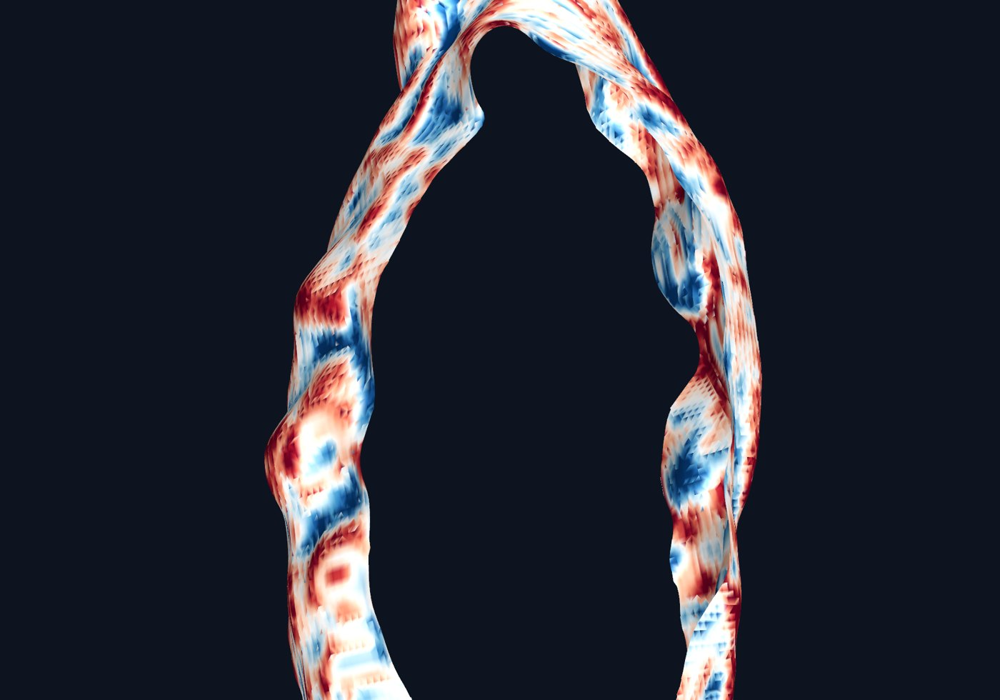
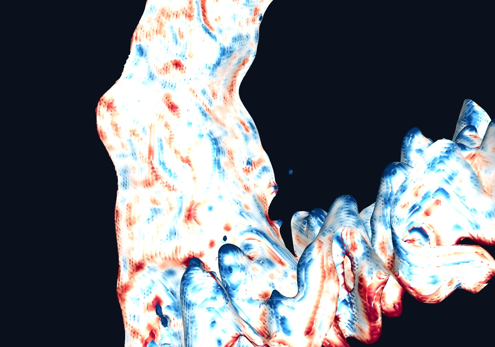
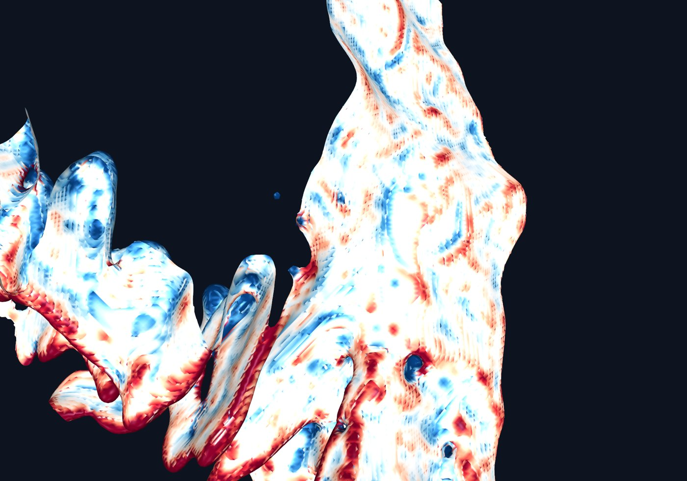
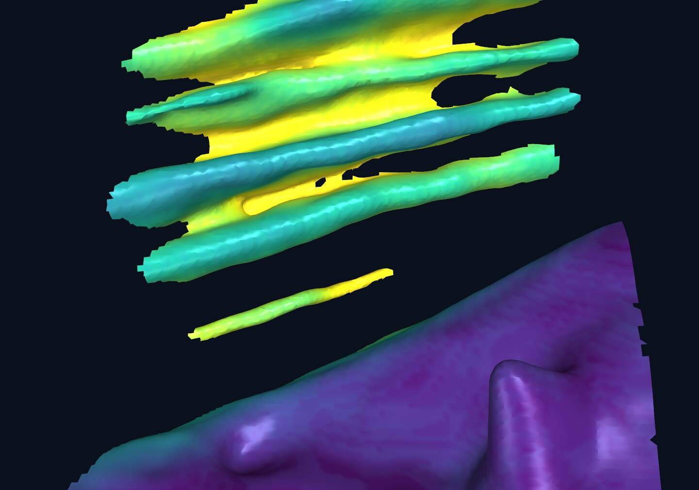